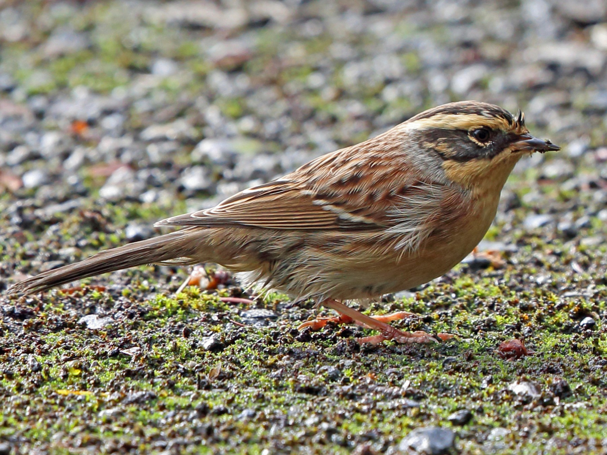

Chez les mâles de la race nominale, la calotte est gris-brun avec une bordure noire, constrastant avec le long
sourcil jaune-crème. Les couvertures auriculaires sont noirâtres avec un peu de chamois sur la partie
postérieure. Les côtés du cou sont gris. Le manteau, le dos et les ailes sont bruns, le manteau avec quelques
stries châtain éclatant. Le croupion et la queue présentent un couleur gris-brun. Les extrémités blanchâtres des
moyennes et des grandes couvertures forment 2 étroites barres alaires qui ne se voient vraiment qu'à très faible
distance.
Taille : 14 cm
Ordre : Passériformes
Famille : Prunellidés
Genre : Prunella
Espèce : montanella
Les accenteurs montanelles chantent à partir du sommet d'un buisson ou d'un arbre, ils émettent des notes
mélodieuses et assez puissantes qui rappellent celles des accenteurs mouchets. Il existe deux types de chant :
le premier est vraiment proche de celui de l'Accenteur mouchet et l'autre est plus bourdonnant. Le cri de
contact est un "dididi" trisyllabique.